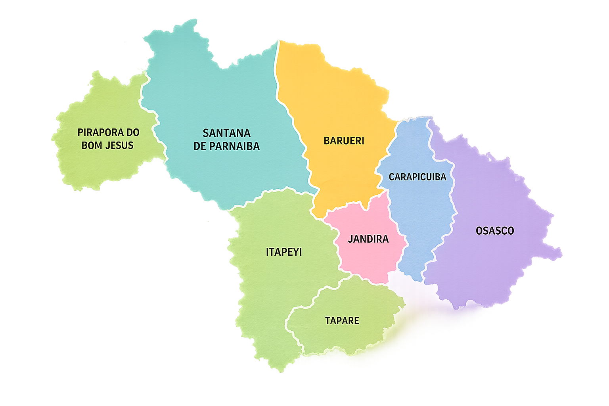

Projeto piloto • Consultas 2026
Produção e aproveitamento de vagas por município
Leitura integrada de oferta, agendamento, perda primária, realização e absenteísmo da rota assistencial.
Carregando base
Mapa da rota
Selecione um município

Comparação trimestral
2º trimestre: abril e maio
Desempenho consolidado
Volume mensal
Oferta, agendamento e realização
Ofertado
Agendado
Realizado
Taxas mensais
Perda primária e absenteísmo
Perda primária
Absenteísmo
Municípios
Comparativo da rota
| Município | Ofertado | Realizado | Perda primária | Absenteísmo |
|---|
Especialidades
Maiores volumes ofertados
| Especialidade | Ofertado | Realizado | Perda primária | Absenteísmo |
|---|
Perda primária
Quantidade não agendada sobre a oferta ÷ quantidade ofertada × 100.
Absenteísmo
Quantidade de faltas ÷ quantidade agendada com vagas do bolsão × 100.
Fonte
Planilhas municipais de consultas • atualização piloto 2026.